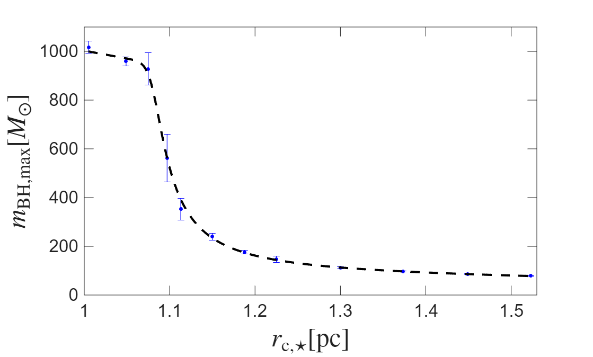
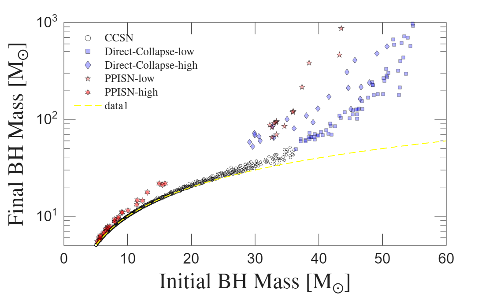
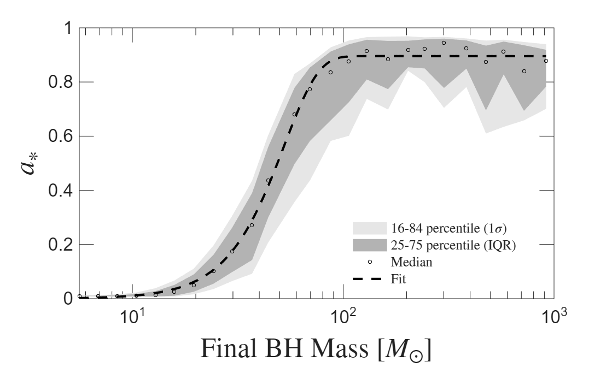

ProtoBH – Black Hole Spin and Mass Function in Proto-clusters
Zacharias.Roupas@unimib.it
Black holes are key physical systems in allowing us to probe the Universe through vast length and time scales via their gravitational-wave emission of binary mergers.
In parallel, compact stellar clusters are ideal environments for black holes to be born, grow in mass, form binaries which get progressively tighter, and merge. Particularly, the globular clusters found inside the haloes of galaxies, are supposed to originate in ancient, compact, massive proto-stellar clusters.
Recent observations revealed the existence of such ancient precursors of globular clusters with typical masses,
about 1 million solar masses, and size 1 parsec, when the Universe was as young as only 460 million years old.
Black holes are formed during the final stage of stellar evolution as the remnants of the most massive stars. The lifetime of stars decreases with increasing mass, therefore the black holes are formed early in the life of a proto-stellar cluster.
Due to mass segregation, black holes and their stellar progenitors accumulate in the core of the cluster where gas density is higher.
For sufficiently massive and compact clusters, black holes are formed before the residual gas is depleted by stellar winds and supernova explosions, and have time to grow in mass via accretion.
The azimuthal velocity of the black holes generates a velocity shear within its gravitational sphere of influence
which induces the formation of an accretion disk on the orbital plane but counter-rotating to the black hole orbit.
The black hole accretes angular momentum from the disk affecting its spin.
Random fluctuations by stellar encounters and gas turbulence induce a spin distribution
with a striking spin-mass corrrelation displayed in a figure below.

Hydrodynamic simulation displaying disk formation around a black hole moving in a regular orbit within the core of a gaseous star cluster.
Displayed in the non-inertial frame attached to the black hole located in the center of the image.

The shift of the BH mass function of black holes grown via accretion in a proto-cluster with total stellar mass equal to 1 million solar masses and star formation efficiency.
[Roupas, A&A, 702 A208 (2025)]

The estimated maximum mass of a black hole grown via accretion in a proto-cluster with total stellar mass equal to 1 million solar masses and star formation efficiency 0.35,
with respect to the final --after gas depletion-- cluster size.
[Roupas, A&A, 702 A208 (2025)]

The shift of the masses of black holes due to accretion of gas in a proto-cluster with total stellar mass equal to 1 million solar masses, star formation efficiency 0.35, and final size 1 parsec,
resembling a typical Cosmic Gems proto-stellar cluster.
[Roupas, A&A, 709 A5 (2026)]

The predicted spin-mass correlation of black holes due to accretion of gas in a proto-cluster with total stellar mass equal to 1 million solar masses, star formation efficiency 0.35, and final size 1 parsec,
resembling a typical Cosmic Gems proto-stellar cluster. The x-axis denotes the final masses of black holes and the y-axis their corresponding final spins. For all black holes the initial spin was set to 0.01.
[Roupas, A&A, 709 A5 (2026)]
This project focuses on calculating the properties of stellar black holes which grow via gas accretion
in proto-stellar clusters before the residual gas gets depleted by star formation and feedback processes.
Emphasis is given on the shift of black hole masses and the black hole spin distribution.
Identifying formation mechanisms of black holes with masses 100-1000 solar masses is a timely, flourishing research subject in astrophysics. Gravitational-wave experiments, LIGO-Virgo-KAGRA collaboration, have revealed a significant population of black holes [GW open science center] within the theorized upper black hole mass gap (60M☉ < mBH < 130M☉) induced by the physics of Pair-Instability Supernovae.
The astrophysical origin of these black holes remains an open question.
Furthermore, the observed abundance and masses of supermassive black holes at high redshifts,
that is at the Universe's early ages, pose a significant challenge to modern-day astrophysics and cosmology.
Funded by the EU Marie Skłodowska-Curie Actions programme, the ProtoBH project aims to provide, among others, a new physically motivated formation channel of mass-gap black holes,
a pathway from stellar-mass to intermediate-mass black hole seeds which are prominent targets of the LISA mission,
and methods to distinguish between different astrophysical origins of gravitational-wave signals.